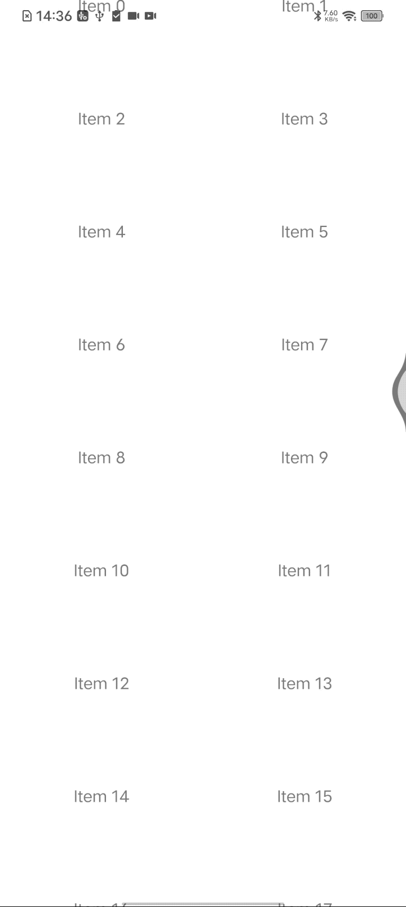

实现 FlatList 、flashList、masonryFlashList 各种列表的自动滚动动画
By yestin
ScrollView滚动动画
实现起来就很容易
import React, { useRef, useEffect } from "react";
import { ScrollView, Text, View, Animated, Easing } from "react-native";
/**
* ScrollView自动滚动了！
*/
const AutoScrollScrollView = () => {
const scrollViewRef = useRef();
const scrollY = useRef(new Animated.Value(0)).current;
const contentHeight = 1000; // 你的内容高度
const scrollDuration = 5000; // 滚动动画的持续时间（毫秒）
useEffect(() => {
const startScrollAnimation = () => {
Animated.timing(scrollY, {
toValue: contentHeight,
duration: scrollDuration,
easing: Easing.linear,
useNativeDriver: false,
}).start(() => {
// 滚动到顶部并重新开始动画
scrollY.setValue(0);
startScrollAnimation();
});
};
startScrollAnimation();
}, []);
return (
<ScrollView
ref={scrollViewRef}
contentContainerStyle={{ height: contentHeight }}
onScroll={(event) => {
const offsetY = event.nativeEvent.contentOffset.y;
// 可以在滚动时执行一些其他操作
}}
scrollEventThrottle={16}
>
<Animated.View
style={{
height: contentHeight,
transform: [{ translateY: scrollY }],
}}
>
<Text>Scrolling Content</Text>
{/* 这里可以放置你的滚动内容 */}
</Animated.View>
</ScrollView>
);
};
export default AutoScrollScrollView;
非ScrollView类的列表 滚动动画
然而，FlatList 、flashList、masonryFlashList要实现自动滚动动画， 却用不了ScrollView同样的方式，实现起来就很曲折，经过各种尝试均失败，无奈，使用定时器方式实现了，
效果图：

源码如下
import React, { useRef, useEffect, useState } from "react";
import { FlatList, View, Text } from "react-native";
import { MasonryFlashList } from "@shopify/flash-list";
const data = Array.from({ length: 20 }, (_, index) => ({
key: index.toString(),
text: `Item ${index}`,
}));
const renderItem = ({ item }) => (
<View
style={{
height: 100,
justifyContent: "center",
alignItems: "center",
}}
>
<Text>{item.text}</Text>
</View>
);
const SlowScrollFlatList = ({ duration }) => {
const flatListRef = useRef();
const scrollDistance = 2; // 控制每次滚动的距离
const scrollInterval = 20; // 每次滚动之间的间隔时间（毫秒）
const [isDragging, setIsDragging] = useState(false);
const scrollIntervalId = useRef(null);
const currentScrollDistance = useRef(0);
const totalScrollDistance = 100 * (data.length - 1);
const scroll = () => {
if (currentScrollDistance.current < totalScrollDistance && !isDragging) {
const nextDistance = Math.min(
totalScrollDistance,
currentScrollDistance.current + scrollDistance
);
flatListRef.current.scrollToOffset({
offset: nextDistance,
animated: false,
});
currentScrollDistance.current = nextDistance;
}
};
const startAutoScroll = () => {
scrollIntervalId.current = setInterval(scroll, scrollInterval);
};
// 监听FlatList的滚动位置
const onScroll = (event) => {
currentScrollDistance.current = event.nativeEvent.contentOffset.y;
};
useEffect(() => {
const stopAutoScroll = () => {
clearInterval(scrollIntervalId.current);
};
flatListRef.current.scrollToOffset({
offset: currentScrollDistance.current,
animated: false,
});
startAutoScroll(); // 初始启动自动滚动
return () => {
stopAutoScroll();
};
}, [isDragging]);
return (
// <FlatList
// ref={flatListRef}
// data={data}
// renderItem={renderItem}
// keyExtractor={(item) => item.key}
// onScrollBeginDrag={() => setIsDragging(true)}
// onScrollEndDrag={() => {
// setIsDragging(false);
// startAutoScroll(); // 用户停止拖动后，重新启动自动滚动
// }}
// onScroll={onScroll}
// // 设置其他 FlatList 的属性
// />
<MasonryFlashList
ref={flatListRef}
estimatedItemSize={/* itemStyles.container.height */ 100}
data={data}
keyExtractor={(item, index) => item?.key}
initialNumToRender={5}
numColumns={2}
renderItem={renderItem}
showsVerticalScrollIndicator={false}
onScrollBeginDrag={() => setIsDragging(true)}
onScrollEndDrag={() => {
setIsDragging(false);
startAutoScroll(); // 用户停止拖动后，重新启动自动滚动
}}
onScroll={onScroll}
/>
);
};
export default SlowScrollFlatList;
核心逻辑：
每间隔 scrollInterval ms，滚动 scrollDistance 小步距离
当 scrollInterval足够小，在1/60s 即16ms左右时，就类似于流畅的每秒60帧动画了
根据实际的效果，调节scrollInterval 、scrollDistance 大小，使达到满意的效果
实际场景应用
请前往 慢速自动滚动的横向瀑布流列表